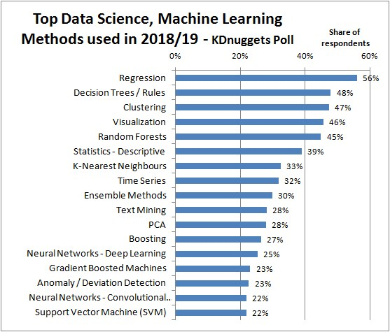
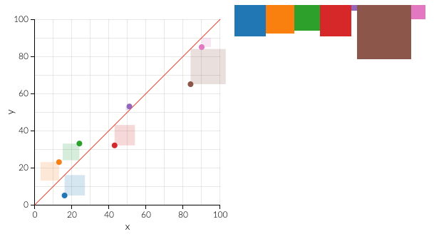
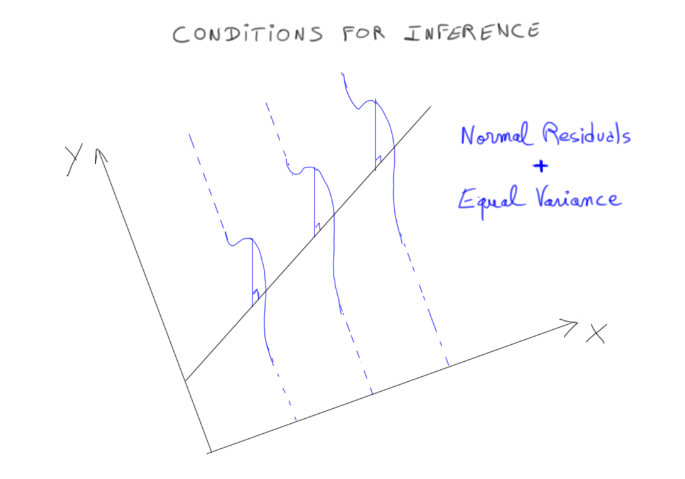
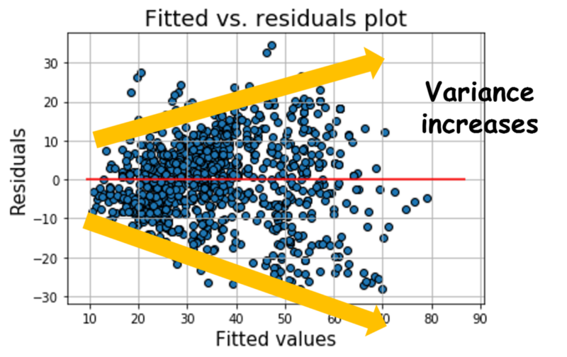
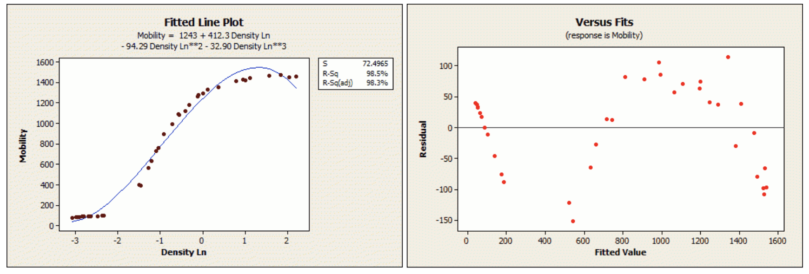
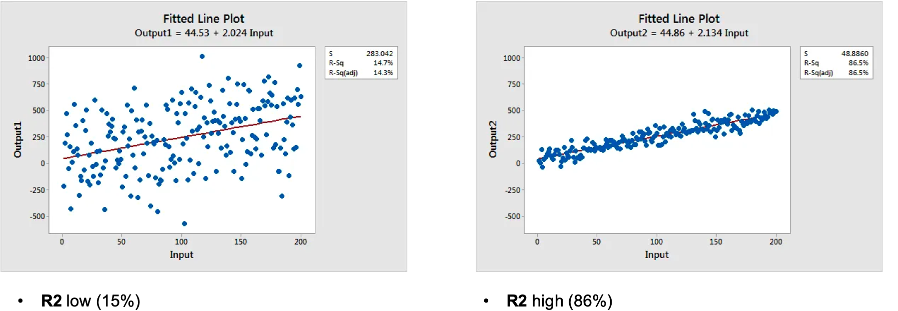

Linear Regression
Comprendre et appliquer la régression linéaire simple et multiple — modéliser une variable cible en fonction de variables explicatives, interpréter les coefficients, évaluer la qualité du modèle (R², p-values) et vérifier les conditions d'inférence.
- Cheatsheet — Linear Regression
- ️ Récapitulatif — Erreurs clés à éviter
- 1) Recap — Inférence statistique
- 2) Motivation — Pourquoi la régression linéaire ?
- 3) Régression linéaire simple — Approche visuelle avec `seaborn`
- 4) Régression linéaire simple — avec `statsmodels`
- 5) Vérification des conditions d'inférence
- 6) Régression linéaire multiple
- 7) Diagnostic de régression — Récapitulatif
- 8) (Annexe) Solution mathématique de l'OLS
- Bibliographie
- Challenges
📋 Cheatsheet — Linear Regression
Setup & données
import pandas as pd
import matplotlib.pyplot as plt
import seaborn as sns
import statsmodels.formula.api as smf
import statsmodels.api as sm
mpg = sns.load_dataset("mpg").dropna() # charge le dataset mpgExploration & corrélations
mpg.corr(numeric_only=True) # matrice de corrélation (valeurs ρ ∈ [-1, 1])
mpg.corr()['weight']['horsepower']**2 # R² entre deux variables
sns.heatmap(mpg.corr(numeric_only=True), cmap="coolwarm", annot=True) # heatmap
sns.scatterplot(x='horsepower', y='weight', data=mpg) # nuage de points
sns.regplot(x='horsepower', y='weight', data=mpg, ci=95) # avec droite de régression et ICRégression simple — Formula API (recommandé)
model = smf.ols(formula='weight ~ horsepower', data=mpg).fit() # ajuste le modèle OLS
model.params # → Intercept (β₀) et pente (β₁)
model.rsquared # → R² : part de variance expliquée (0 à 1)
model.summary() # → tableau complet : coefs, std err, t, p-value, IC 95%
model.predict(X) # → valeurs prédites ŷ
model.resid # → résidus (y - ŷ)Régression simple — Standard API
Y = mpg['weight']
X = mpg['horsepower']
model = sm.OLS(Y, X).fit() # sans intercept automatique (attention !)Régression multiple
## Ajouter plusieurs variables explicatives dans la formule
model2 = smf.ols(formula='weight ~ horsepower + cylinders', data=mpg).fit()
model2.rsquared # R² global du modèle
## Variable catégorielle → C() encode automatiquement en dummy variables
model3 = smf.ols(formula='weight ~ C(origin)', data=mpg).fit()
model3 = smf.ols(formula='weight ~ C(origin) - 1', data=mpg).fit() # sans intercept (coefs = moyennes)Partial regression plots (multivarié)
fig = plt.figure(figsize=(10, 6))
fig = sm.graphics.plot_partregress_grid(model2, fig=fig) # effet de chaque variable en isolationVérification des résidus
predicted = model.predict(mpg['horsepower']) # ŷ
residuals = predicted - mpg['weight'] # résidus = ŷ - y
sns.histplot(residuals, kde=True) # normalité des résidus (doit ≈ gaussien)
sns.scatterplot(x=predicted, y=residuals) # homoscédasticité (variance constante)Rang d'une matrice (indépendance des features)
import numpy as np
np.linalg.matrix_rank(X) # doit = nombre de features (sinon multicolinéarité !)⚠️ Récapitulatif — Erreurs clés à éviter
Confondre corrélation et causalité
❌ "Higher horsepower causes higher weight"
✅ "Powerful cars tend to be heavier" — la régression mesure une association, pas une cause
Ignorer les conditions d'inférence avant d'interpréter p-values et IC
❌ Regarder les p-values sans vérifier si les résidus sont normaux et homoscédastiques
✅ Toujours tracer sns.histplot(residuals) et sns.scatterplot(x=predicted, y=residuals) avant de conclure
Multicolinéarité : deux features trop corrélées → coefficients non fiables
❌ Inclure displacement et cylinders ensemble sans vérifier (ρ = 0.95 !)
✅ Vérifier la matrice de corrélation et le rang de X : np.linalg.matrix_rank(X) doit = nb de features
Oublier l'intercept dans le modèle Standard API
❌ sm.OLS(Y, X).fit() — pas d'intercept automatique → R² biaisé
✅ smf.ols(formula='weight ~ horsepower', data=mpg).fit() — l'intercept est ajouté automatiquement
Faire confiance à un R² élevé sans vérifier la significativité statistique
❌ R² = 0.84 sur un échantillon de 10 observations → peut être dû au hasard
✅ Vérifier le F-statistic et les p-values individuelles (p < 0.05)
1) Recap — Inférence statistique
1.1 Distribution d'échantillonnage
- μ̂ = distribution plausible des valeurs pour la vraie moyenne μ
- Intervalles de confiance à 95%
1.2 Tests d'hypothèse
p-value: probabilité d'observer un résultat aussi extrême si H₀ est vraie- Seuil de significativité α = 0.05
1.3 Théorème central limite étendu
- z-test pour distributions normales N
- t-test pour distributions de Student T_ν
1.4 Inférence bayésienne
- posterior ∝ prior × likelihood
- Maximum Likelihood Estimate (MLE)
- Maximum A Posteriori Estimate (MAP)
2) Motivation — Pourquoi la régression linéaire ?

- Outil statistique appliqué le plus important
- Interprétable : chaque coefficient a un sens métier
- Standard pour l'inférence causale (
causal inference)
Problème métier : Comment augmenter la satisfaction client tout en maintenant un volume de commandes sain ?
La régression linéaire permet d'analyser : quelles features impactent le plus review_score ? Comment contrôler les facteurs confondants ?
3) Régression linéaire simple — Approche visuelle avec seaborn
3.1 Le dataset mpg
Le dataset mpg contient ~400 modèles de voitures de 1970 à 1982.
import pandas as pd
import matplotlib.pyplot as plt
import seaborn as sns
mpg = sns.load_dataset("mpg").dropna() # charge et nettoie le dataset
mpg.head() # aperçu des premières lignesColonnes principales : mpg (miles/gallon), cylinders, displacement (volume en cc), horsepower, weight (en lbs), acceleration.
3.2 Ordinary Least Squares (OLS)
Objectif : trouver la droite ŷ = (β₀ + β₁ × horsepower) la plus proche des valeurs réelles de weight.
Formulation mathématique :
On cherche β = (β₀, β₁) qui minimise la somme des carrés des résidus (SSR) :
OLS est très sensible aux outliers ! Un point extrême peut fortement déformer la droite.
sns.scatterplot(x='horsepower', y='weight', data=mpg) # nuage de points brut
sns.regplot(x='horsepower', y='weight', data=mpg) # avec droite OLS
3.3 Corrélation et R²
round(mpg.corr(numeric_only=True), 2) # matrice de corrélation ρ ∈ [-1, 1]
r_squared = (mpg.corr(numeric_only=True)['weight']['horsepower'])**2
print('R-Squared = ', r_squared) # R² = ρ² pour régression simple## Output
R-Squared = 0.7474254996898221plt.figure(figsize=(7, 7))
sns.heatmap(round(mpg.corr(numeric_only=True), 2),
cmap="coolwarm", annot=True, annot_kws={"size": 12}) # heatmap des corrélationsR² (coefficient de détermination) : % de la variance de weight expliqué par horsepower.
- R² ∈ [0, 1] : 0 = n'explique rien, 1 = relation parfaite

👉 Interpréter R² — Statistics by Jim
4) Régression linéaire simple — avec statsmodels
4.1 Deux API disponibles
Formula API (recommandé, plus intuitif) :
import statsmodels.formula.api as smf
model = smf.ols(formula='weight ~ horsepower', data=mpg).fit() # entraîne le modèleStandard API :
import statsmodels.api as sm
Y = mpg['weight']
X = mpg['horsepower']
model = sm.OLS(Y, X).fit() # trouve le meilleur β — attention : pas d'intercept auto
model.predict(X) # ŷ = valeurs prédites4.2 Interprétation des coefficients
print(model.params)## Output
Intercept 984.500327
horsepower 19.078162
dtype: float64- β₁ = 19.08 → "Chaque augmentation d'1 horsepower → +19 lbs de poids en moyenne"
- β₀ = 984.5 → "Une voiture à 0 horsepower pèserait 984 lbs" (extrapolation, à prendre avec précaution)
model.rsquared # → 0.747 : 74% de la variance du poids expliquée par horsepower4.3 Lire le model.summary()
model.summary() # tableau complet d'inférence statistiqueMétriques clés du summary :
| Métrique | Valeur | Signification | ||
|---|---|---|---|---|
| R-squared | 0.747 | 74.7% de variance expliquée | ||
| Adj. R-squared | 0.747 | Pénalisé pour nb de features | ||
| F-statistic | 1154 | Significativité globale du modèle | ||
| Prob (F-statistic) | 1.36e-118 | p-value globale ≈ 0 | ||
| coef (horsepower) | 19.078 | Pente β₁ | ||
| std err | 0.562 | Incertitude sur β₁ | ||
| t | 33.972 | t-statistic = coef / std err | ||
| P>\ | t\ | 0.000 | p-value (≈ 0 → très significatif) | |
| [0.025, 0.975] | [17.974, 20.182] | IC à 95% pour β₁ |
4.4 Inférence sur les coefficients — Formule du std err
La distribution de β̂₁ autour de la vraie valeur β₁ est estimée via :
n = 392
residuals = model.predict(mpg['horsepower']) - mpg['weight']
residuals.std() / mpg.horsepower.std() / (n - 2)**0.5 # → 0.5615 ≈ 0.562 ✓On divise par n - 2 (degrés de liberté) car on a estimé 2 paramètres (β₀ et β₁). 👉 Vidéo explicative
4.5 t-statistic et p-value
H₀ : horsepower n'est pas corrélé avec weight (β₁ = 0)
Le t-statistic mesure combien d'écarts-types β̂₁ est éloigné de 0 :
La p-value = probabilité d'observer β̂₁ ≥ 19.07 si H₀ était vraie ≈ 0
→ p-value ≈ 0 ≤ 0.05 : la relation est statistiquement significative
4.6 F-statistic
- H₀ : tous les coefficients sont nuls
- F ≈ 1 → H₀ ne peut pas être rejetée
- F >> 1 → au moins un coefficient est significatif → la régression est globalement significative
5) Vérification des conditions d'inférence
Pour que les p-values et IC soient fiables, il faut :
✔ Échantillonnage aléatoire
✔ Échantillonnage indépendant (avec remise ou n < 10% de la population)
⚠ Résidus normalement distribués et de variance constante ← à vérifier !

5.1 Résidus normalement distribués ?
predicted_weights = model.predict(mpg['horsepower']) # ŷ = poids prédits
residuals = predicted_weights - mpg['weight'] # résidus = ŷ - y (aussi : model.resid)
sns.histplot(residuals, kde=True, edgecolor='w') # doit ressembler à une gaussienne5.2 Variance constante (homoscédasticité) ?
## Residuals vs Fitted : les résidus doivent être uniformément dispersés
sns.scatterplot(x=predicted_weights, y=residuals)
plt.xlabel('Predicted weight')
plt.ylabel('Residual weight')Hétéroscédasticité : si la variance des résidus augmente avec ŷ → les IC et p-values sont sous-estimés.

Résidus auto-corrélés : fréquent en séries temporelles (inflation, patterns hebdomadaires...). Si un pattern apparaît → une variable explicative est probablement manquante.

5.3 Que faire si les résidus ne sont pas aléatoires ?
| Métrique | Impact |
|---|---|
| R² | ✅ Toujours valide (déterministe) |
| p-values et IC | ⚠️ Peuvent être sous-estimés → trop optimistes |
Solutions possibles : ajouter des features pour expliquer les patterns résiduels, transformer Y (ex: log(Y)), ou utiliser un modèle non linéaire.
6) Régression linéaire multiple
6.1 Ajouter des variables explicatives
model2 = smf.ols(formula='weight ~ horsepower + cylinders', data=mpg).fit()
model2.rsquared # → 0.846 : 84.6% de variance expliquée (vs 74.7% avec une seule variable)model2.params## Output
Intercept 528.876711
horsepower 8.231070
cylinders 290.356425
dtype: float64- β₁ = 8.23 → "Chaque +1 horsepower augmente le poids de 8 lbs, en contrôlant le nombre de cylinders"
- β₂ = 290.4 → "Chaque cylindre supplémentaire augmente le poids de 290 lbs, en contrôlant horsepower"
6.2 R² en régression multiple
En régression multiple, R² ≠ Corr(Y, Xᵢ)². Toujours inclure un intercept pour que R² soit interprétable.
| R² | Interprétation |
|---|---|
| R² = 1 | Modèle parfait : les features expliquent 100% de Y |
| R² = 0 | Aussi bon que prédire la moyenne |
| R² < 0 | Pire que prédire la moyenne ! |

6.3 Partial regression plots
Visualise l'effet de chaque variable en maintenant les autres constantes :
import statsmodels.api as sm
fig = plt.figure(figsize=(10, 6))
fig = sm.graphics.plot_partregress_grid(model2, fig=fig) # grille de graphiques partielsComment sont construits ces graphiques ? La valeur Y d'un point = résidu du poids prédit sans la variable en question. La valeur X = résidu de la variable en question prédit par les autres features. Cela isole la contribution unique de chaque variable.
6.4 Variables catégorielles
mpg['origin'].unique() # → ['usa', 'japan', 'europe']
## C() encode automatiquement en variables dummy (one-hot encoding)
model3 = smf.ols(formula='weight ~ C(origin)', data=mpg).fit()
model3.params## Output
Intercept 2433.470588 # = moyenne de la référence (europe)
C(origin)[T.japan] -212.242740 # japan pèse 212 lbs de moins qu'europe
C(origin)[T.usa] 939.019208 # usa pèse 939 lbs de plus qu'europe
dtype: float64## Sans intercept : les coefs = moyennes directes de chaque groupe
model3 = smf.ols(formula='weight ~ C(origin) - 1', data=mpg).fit()
model3.params## Output
C(origin)[europe] 2433.470588
C(origin)[japan] 2221.227848
C(origin)[usa] 3372.489796
dtype: float647) Diagnostic de régression — Récapitulatif
| Vérification | Description | Outil |
|---|---|---|
| Goodness-of-fit | Le modèle explique une bonne part de la variance | R² |
| Significativité statistique | Peut-on faire confiance aux coefficients ? | p-values, F-statistic |
| Conditions d'inférence | Résidus : moyenne nulle, variance constante, non corrélés | Graphiques des résidus |
👉 [Summary annoté complet
8) (Annexe) Solution mathématique de l'OLS
Modèle général (multivarié) :
En notation matricielle :
OLS minimise la norme euclidienne des résidus ‖u‖² :
Développement :
Dérivée = 0 (condition du minimum) :
Solution analytique (Normal Equation) :
(X'X)⁻¹X' est appelée la pseudo-inverse de X. Elle n'existe que si X est de rang plein (toutes les features sont indépendantes → pas de multicolinéarité).
X = np.array([
[1., 0., 1.],
[0., 1., 1.],
[0., 0., 0.]
])
np.linalg.matrix_rank(X) # → 2 (pas 3) : la 3ème colonne = somme des deux premières → multicolinéarité !## Output
2Rang < nombre de features → (X'X) non inversible → pas de solution unique OLS → coefficients non fiables
Complexité computationnelle :
- Inverser X'X (méthode basique) : O(k³)
- Méthode avancée : O(k²·⁴)
- Pseudo-inverse via décomposition SVD : O(k²) ← meilleure option pour k grand
OLS passe bien à l'échelle en n (observations) car la complexité est proportionnelle à O(n), mais peut être coûteux si k (features) est très grand.
📚 Bibliographie
- 👉 OLS Inference Assumptions — KDNuggets
- 👉 OLS Assumptions — Stats By Jim
- 👉 StatsQuest - Linear Regression (vidéos YouTube intuitives)
- 👉 Statistics by Jim - Regression Analysis (blog concis)
- 👉 Coursera — Regression Models (4 semaines, gratuit)
- 👉 ISLR — Section 3 : Regression (James / Witten / Hastie / Tibshirani)
- 👉 Interpréter R² — Statistics by Jim
- 👉 Visualisation dynamique OLS
🚀 Challenges
- Challenge 01 : Modéliser
review_scoredesorderscomme fonction linéaire de plusieurs variables explicatives - Challenge 02 : Identifier les
sellers(etproducts) systématiquement sous-performants
- 🧭 Introduction
- 1. La droite de régression — $y = \beta_0 + \beta_1 x$
- 2. OLS — Trouver la meilleure droite
- 3. Mesurer la qualité : corrélation et R²
- 4. Régression avec `statsmodels` — La pratique
- 5. Tests statistiques — Peut-on faire confiance aux coefficients ?
- 6. Vérification des résidus — Est-ce que le modèle est fiable ?
- 7. Régression linéaire multiple
- 8. Variables catégorielles
- 9. Erreurs classiques à éviter
- 10. Annexe — La solution mathématique de l'OLS (pour les curieux)
- 🎯 Questions de vérification
- 📌 TL;DR
🧭 Introduction
La régression linéaire est l'outil de base de toute l'analyse de données. Son but : prédire une valeur numérique continue à partir d'une ou plusieurs autres variables.
Exemples concrets : prédire le prix d'un appartement selon sa surface, estimer le poids d'une voiture selon sa puissance, anticiper le chiffre d'affaires en fonction des dépenses marketing.
À retenir absolument
- La régression linéaire cherche la droite (ou le plan) qui passe au mieux au milieu des données.
- "Au mieux" signifie : minimiser les écarts entre les valeurs réelles et les valeurs prédites.
- Chaque variable explicative reçoit un coefficient qui quantifie son influence sur la cible.
- Le R² mesure la qualité globale du modèle (de 0 = inutile à 1 = parfait).
- Corrélation ne signifie pas causalité : une relation statistique ne prouve pas qu'une variable cause l'autre.
Analogie fil rouge
Imaginez un nuage de points sur un graphique (chaque point = une maison, avec sa surface en X et son prix en Y). La régression linéaire, c'est trouver la droite qui passe au mieux au milieu de ce nuage — celle qui minimise la distance verticale entre chaque point et la droite. Une fois cette droite trouvée, on peut lire le prix estimé d'une nouvelle maison en cherchant son point sur la droite.
Plan du cours
- La formule de la droite et ses coefficients
- La méthode OLS — comment on trouve la meilleure droite
- Mesurer la qualité : R² et corrélation
- Lire les résultats avec
statsmodels - Vérifier les conditions pour que le modèle soit fiable
- Régression multiple — plusieurs variables explicatives
- Variables catégorielles
- Annexe mathématique (pour les curieux)
1. La droite de régression — $y = \beta_0 + \beta_1 x$
La formule de base
En régression linéaire simple (une seule variable explicative), le modèle est :
Chaque symbole traduit :
| Symbole | Nom | Signification |
|---|---|---|
| $\hat{y}$ | y chapeau | La valeur prédite par le modèle |
| $\beta_0$ | bêta zéro (intercept) | La valeur de $y$ quand $x = 0$ |
| $\beta_1$ | bêta un (pente) | De combien $y$ augmente quand $x$ augmente de 1 |
| $x$ | variable explicative | La variable qu'on utilise pour prédire |
Exemple concret — Prédire le prix d'un appartement
Supposons que le modèle a appris :
- $\beta_0 = 50\,000$ : un appartement de 0 m² coûterait 50 000 € (valeur théorique, souvent peu réaliste)
- $\beta_1 = 3\,000$ : chaque m² supplémentaire ajoute 3 000 € au prix
Pour un appartement de 80 m² :
La pente $\beta_1$ est la clé : elle dit "si $x$ augmente de 1, $y$ change de $\beta_1$ en moyenne". C'est ce coefficient qu'on interprète en premier.
2. OLS — Trouver la meilleure droite
Le principe des moindres carrés
Pour chaque observation, le modèle fait une erreur : la différence entre la valeur réelle $y_i$ et la valeur prédite $\hat{y}_i$. Cette erreur s'appelle un résidu.
La méthode OLS (Ordinary Least Squares = moindres carrés ordinaires) cherche les valeurs de $\beta_0$ et $\beta_1$ qui minimisent la somme des carrés de tous les résidus :
En français : on cherche la droite telle que la somme de (erreur)² pour tous les points soit la plus petite possible.
Pourquoi "au carré" ?
- Pour éviter que les erreurs positives et négatives s'annulent
- Pour pénaliser davantage les grosses erreurs (2² = 4, mais 4² = 16)
Exemple numérique
3 appartements :
| Surface $x$ | Prix réel $y$ | Prix prédit $\hat{y}$ | Résidu $y - \hat{y}$ | Résidu² |
|---|---|---|---|---|
| 30 m² | 140 000 € | 140 000 € | 0 | 0 |
| 50 m² | 190 000 € | 200 000 € | -10 000 | 100 000 000 |
| 80 m² | 300 000 € | 290 000 € | +10 000 | 100 000 000 |
Somme des résidus² = 200 000 000. OLS cherche les $\beta$ qui rendent cette somme minimale.
OLS est sensible aux valeurs aberrantes (outliers). Un point extrême peut "attirer" la droite vers lui et fausser tout le modèle. Toujours visualiser ses données avant de modéliser.
Le MSE — Mean Squared Error
On divise souvent la somme des résidus² par le nombre d'observations pour obtenir le MSE :
- $n$ = nombre d'observations
- Plus le MSE est proche de 0, mieux le modèle prédit
3. Mesurer la qualité : corrélation et R²
La corrélation $\rho$
La corrélation (notée $\rho$, "rho") mesure à quel point deux variables varient ensemble :
- $\rho = 1$ : relation linéaire parfaite positive (quand $x$ monte, $y$ monte proportionnellement)
- $\rho = -1$ : relation linéaire parfaite négative
- $\rho = 0$ : aucune relation linéaire
import seaborn as sns
mpg = sns.load_dataset("mpg").dropna() # dataset de voitures (puissance, poids, conso...)
# Matrice de corrélation entre toutes les variables numériques
mpg.corr(numeric_only=True)
# Corrélation spécifique entre horsepower et weight
mpg.corr(numeric_only=True)['weight']['horsepower'] # → environ 0.865# Visualiser toutes les corrélations d'un coup
import matplotlib.pyplot as plt
plt.figure(figsize=(7, 7))
sns.heatmap(
round(mpg.corr(numeric_only=True), 2), # arrondir à 2 décimales
cmap="coolwarm", # rouge = corrélation positive, bleu = négative
annot=True, # afficher les valeurs dans les cases
annot_kws={"size": 12}
)Le R² — Coefficient de détermination
Le R² (prononcé "R deux" ou "R carré") est la métrique principale pour évaluer un modèle de régression.
Chaque terme :
| Terme | Signification |
|---|---|
| $y_i$ | Valeur réelle de l'observation $i$ |
| $\hat{y}_i$ | Valeur prédite par le modèle |
| $\bar{y}$ | Moyenne de toutes les valeurs réelles |
| Numérateur | Erreur résiduelle du modèle |
| Dénominateur | Erreur totale si on prédisait toujours la moyenne |
Intuition : R² compare "mon modèle" à "la stratégie idiote qui prédit toujours la moyenne". Si mon modèle est bien meilleur que cette stratégie, R² est proche de 1.
| R² | Interprétation |
|---|---|
| $R^2 = 1$ | Prédictions parfaites (rare en pratique) |
| $R^2 = 0.75$ | Le modèle explique 75 % de la variance de $y$ |
| $R^2 = 0$ | Aussi utile que prédire la moyenne — inutile |
| $R^2 < 0$ | Pire que prédire la moyenne (modèle mal ajusté) |
En régression simple, $R^2 = \rho^2$ (le carré de la corrélation).
# R² à la main pour régression simple
r_squared = (mpg.corr(numeric_only=True)['weight']['horsepower'])**2
print('R² =', r_squared) # → 0.747R² = 0.747 signifie que la puissance du moteur (horsepower) explique 74,7 % des variations de poids des voitures. Les 25,3 % restants sont dus à d'autres facteurs non pris en compte.
4. Régression avec statsmodels — La pratique
Installer et charger
import statsmodels.formula.api as smf # API "formule" — la plus intuitive
import seaborn as sns
mpg = sns.load_dataset("mpg").dropna() # charger les donnéesAjuster le modèle (Formula API)
# "weight ~ horsepower" = "je veux prédire weight en fonction de horsepower"
model = smf.ols(formula='weight ~ horsepower', data=mpg).fit()Décomposition ligne par ligne :
smf.ols(...): crée un modèle OLS (moindres carrés ordinaires)formula='weight ~ horsepower': la variable à prédire est à gauche du~, les variables explicatives à droitedata=mpg: le DataFrame source.fit(): lance le calcul pour trouver les meilleurs $\beta_0$ et $\beta_1$
La Formula API ajoute automatiquement l'intercept ($\beta_0$). Préférez toujours cette API à la Standard API pour débuter.
Lire les coefficients
print(model.params) # affiche les coefficients estimésRésultat :
Intercept 984.500
horsepower 19.078- $\beta_0 = 984.5$ (Intercept) : valeur théorique de
weightquandhorsepower = 0 - $\beta_1 = 19.08$ : chaque cheval-vapeur supplémentaire ajoute 19 lbs au poids moyen
Donc le modèle appris est :
Pour une voiture de 150 chevaux :
model.rsquared # → 0.747 : le modèle explique 74.7% de la variance du poidsFaire des prédictions
nouvelles_valeurs = pd.DataFrame({'horsepower': [100, 150, 200]}) # 3 voitures à prédire
model.predict(nouvelles_valeurs) # → poids prédit pour chacuneLe model.summary() — Tableau complet
model.summary() # affiche toutes les statistiques d'inférenceCe tableau contient tout ce dont on a besoin pour évaluer le modèle. Voici les métriques clés :
| Métrique | Valeur | Ce que ça veut dire | ||
|---|---|---|---|---|
| R-squared | 0.747 | 74.7 % de variance expliquée | ||
| Adj. R-squared | 0.747 | R² pénalisé pour le nb de variables (utile en régression multiple) | ||
| F-statistic | 1154 | Significativité globale du modèle | ||
| Prob (F-statistic) | ≈ 0 | p-value globale : le modèle est utile | ||
| coef (horsepower) | 19.078 | La pente $\beta_1$ | ||
| std err | 0.562 | Incertitude sur $\beta_1$ | ||
| t | 33.97 | $\beta_1$ est à 33.97 écarts-types de zéro | ||
| P>\ | t\ | 0.000 | p-value : relation très significative | |
| [0.025, 0.975] | [17.97, 20.18] | Intervalle de confiance à 95 % pour $\beta_1$ |
5. Tests statistiques — Peut-on faire confiance aux coefficients ?
Le std err (erreur standard)
On n'a qu'un échantillon de données. Si on avait un échantillon différent, on obtiendrait des $\beta$ légèrement différents. Le std err quantifie cette incertitude :
- On divise par $n - 2$ car on a estimé 2 paramètres ($\beta_0$ et $\beta_1$) — ce sont les degrés de liberté
- Plus $n$ est grand, plus le std err est petit, plus on est précis
n = len(mpg) # nombre d'observations = 392
residuals = model.predict(mpg['horsepower']) - mpg['weight'] # résidus = ŷ - y
# Vérification manuelle du std err
residuals.std() / mpg['horsepower'].std() / (n - 2)**0.5 # → ≈ 0.562 (correspond au summary)Le t-statistic et la p-value
Hypothèse nulle H₀ : horsepower n'a aucun lien avec weight, donc $\beta_1 = 0$.
Le t-statistic mesure combien d'écarts-types $\hat{\beta}_1$ est éloigné de zéro :
Un $t = 33.97$ est énorme — cela signifie que si H₀ était vraie (aucun lien), la probabilité d'observer un coefficient aussi grand par pur hasard serait quasi nulle.
Cette probabilité s'appelle la p-value :
- Si p-value < 0.05 : on rejette H₀ — la relation est statistiquement significative
- Si p-value ≥ 0.05 : on ne peut pas rejeter H₀ — la relation n'est pas prouvée
Ici, p-value ≈ 0 → horsepower est bien un prédicteur significatif de weight.
Une p-value < 0.05 ne signifie pas que la relation est forte ou importante en pratique — elle dit seulement qu'elle n'est probablement pas due au hasard. Un grand échantillon peut rendre n'importe quelle toute petite relation "significative".
Le F-statistic — Significativité globale du modèle
- H₀ : tous les coefficients sont nuls (le modèle n'explique rien)
- $F \approx 1$ : impossible de rejeter H₀ — le modèle est inutile
- $F \gg 1$ : au moins un coefficient est significatif — le modèle est globalement utile
Ici $F = 1154$ avec une p-value ≈ 0 : le modèle est clairement significatif.
6. Vérification des résidus — Est-ce que le modèle est fiable ?
Pour que les p-values et intervalles de confiance soient valides, il faut respecter certaines conditions sur les résidus.
Condition 1 — Résidus normalement distribués
predicted = model.predict(mpg['horsepower']) # valeurs prédites ŷ
residuals = predicted - mpg['weight'] # résidus = ŷ - y
import seaborn as sns
sns.histplot(residuals, kde=True, edgecolor='w') # doit ressembler à une courbe en clocheSi l'histogramme ressemble à une gaussienne (courbe en cloche symétrique) : condition respectée.
Condition 2 — Homoscédasticité (variance constante)
# Résidus vs valeurs prédites
sns.scatterplot(x=predicted, y=residuals)
# Les points doivent être uniformément dispersés (pas d'entonnoir, pas de courbe)Si les résidus s'écartent de plus en plus quand $\hat{y}$ augmente (forme d'entonnoir), c'est de l'hétéroscédasticité : les p-values et IC sont sous-estimés → trop optimistes.
Si les résidus forment un pattern (courbe, entonnoir, zigzag), cela signale soit une variable explicative manquante, soit une relation non linéaire entre $x$ et $y$.
Que faire si les conditions ne sont pas respectées ?
| Problème | Solution possible |
|---|---|
| Résidus non gaussiens | Transformer $Y$ (par ex. prendre $\log(Y)$) |
| Hétéroscédasticité | Ajouter des variables explicatives |
| Pattern dans les résidus | Ajouter des features, essayer un modèle non linéaire |
Le R² reste toujours valide même si les résidus ne sont pas parfaits. C'est seulement les p-values et intervalles de confiance qui deviennent peu fiables.
7. Régression linéaire multiple
Ajouter plusieurs variables
La régression simple utilise une variable pour prédire. La régression multiple en utilise plusieurs :
# Ajouter plusieurs variables avec le signe +
model2 = smf.ols(formula='weight ~ horsepower + cylinders', data=mpg).fit()
model2.rsquared # → 0.846 (vs 0.747 avec une seule variable)On passe de R² = 0.747 à R² = 0.846 : ajouter cylinders améliore le modèle.
print(model2.params)Intercept 528.877
horsepower 8.231
cylinders 290.356Interprétation :
- $\beta_1 = 8.23$ : "chaque cheval supplémentaire ajoute 8 lbs, en maintenant le nombre de cylindres constant"
- $\beta_2 = 290.4$ : "chaque cylindre supplémentaire ajoute 290 lbs, en maintenant la puissance constante"
En régression multiple, les coefficients s'interprètent toujours "toutes choses égales par ailleurs". La pente de horsepower passe de 19 à 8 parce qu'une partie de son effet était en réalité due aux cylindres (les deux variables sont corrélées).
R² en régression multiple
En régression multiple, $R^2 \neq \rho^2$. La formule reste la même mais on ne peut plus le calculer comme le carré d'une corrélation. Inclure toujours un intercept pour que R² soit interprétable.
Partial regression plots — Isoler l'effet de chaque variable
Ces graphiques montrent l'effet d'une variable en maintenant les autres constantes :
import statsmodels.api as sm
import matplotlib.pyplot as plt
fig = plt.figure(figsize=(10, 6))
# Crée un graphique par variable explicative
fig = sm.graphics.plot_partregress_grid(model2, fig=fig)Sur chaque sous-graphique, on voit la relation "nette" entre une variable et la cible, une fois que l'effet des autres variables a été retiré.
8. Variables catégorielles
Le problème
origin dans le dataset mpg peut valoir 'usa', 'japan' ou 'europe'. On ne peut pas mettre des mots dans une formule mathématique.
La solution : C() pour encoder automatiquement
mpg['origin'].unique() # → ['usa', 'japan', 'europe']
# C() = "Catégorie" → crée automatiquement des variables dummy (0/1)
model3 = smf.ols(formula='weight ~ C(origin)', data=mpg).fit()
print(model3.params)Intercept 2433.47 # = moyenne de la catégorie de référence (europe)
C(origin)[T.japan] -212.24 # japan pèse 212 lbs de MOINS qu'europe en moyenne
C(origin)[T.usa] 939.02 # usa pèse 939 lbs de PLUS qu'europe en moyenneeurope est la catégorie de référence (la première par ordre alphabétique). Tous les coefficients s'interprètent par rapport à cette référence.
# Variante sans intercept : les coefficients = moyennes directes de chaque groupe
model3b = smf.ols(formula='weight ~ C(origin) - 1', data=mpg).fit()
print(model3b.params)C(origin)[europe] 2433.47
C(origin)[japan] 2221.23
C(origin)[usa] 3372.49Ici chaque coefficient est directement le poids moyen des voitures de cette origine.
En pratique, utilisez C(origin) avec intercept (la version par défaut) sauf si vous voulez comparer les groupes directement à leurs moyennes.
9. Erreurs classiques à éviter
Corrélation ≠ causalité — "Les voitures puissantes ont tendance à être plus lourdes" n'implique pas que la puissance cause le poids. La régression mesure une association, pas une cause.
Multicolinéarité — Si deux variables explicatives sont très corrélées entre elles (ex. displacement et cylinders avec $\rho = 0.95$), les coefficients deviennent peu fiables et difficiles à interpréter.
import numpy as np
# Vérifier le rang de la matrice X : doit être égal au nombre de variables
np.linalg.matrix_rank(X) # si rang < nb de features → multicolinéarité !Oublier l'intercept — Avec la Standard API (sm.OLS), l'intercept n'est pas ajouté automatiquement. Préférez la Formula API (smf.ols) qui l'inclut toujours.
Faire confiance à un R² élevé sur petit échantillon — R² = 0.84 avec seulement 10 observations peut être dû au hasard. Vérifiez toujours le F-statistic et les p-values.
10. Annexe — La solution mathématique de l'OLS (pour les curieux)
Notation matricielle
Quand on a $k$ variables explicatives et $n$ observations, on écrit :
- $\vec{Y}$ : vecteur de toutes les valeurs cibles (taille $n$)
- $X$ : matrice des variables explicatives ($n$ lignes, $k+1$ colonnes avec une colonne de 1 pour l'intercept)
- $\vec{\beta}$ : vecteur des coefficients à trouver
- $\vec{u}$ : vecteur des résidus (erreurs)
La solution analytique
OLS minimise $\|\vec{u}\|^2 = \|\vec{Y} - X\vec{\beta}\|^2$. En dérivant et en annulant la dérivée, on obtient la Normal Equation :
C'est une formule exacte — pas besoin de méthode itérative. Elle nécessite d'inverser la matrice $X^TX$.
$(X^TX)^{-1}X^T$ s'appelle la pseudo-inverse de $X$. Elle n'existe que si toutes les colonnes de $X$ sont indépendantes (pas de multicolinéarité).
import numpy as np
# Exemple de matrice avec multicolinéarité
X = np.array([
[1., 0., 1.], # 3ème colonne = somme des deux premières
[0., 1., 1.],
[0., 0., 0.]
])
np.linalg.matrix_rank(X) # → 2 (et non 3) : multicolinéarité détectée !Si matrix_rank(X) < nombre de colonnes, la matrice $X^TX$ n'est pas inversible → OLS n'a pas de solution unique → les coefficients sont non fiables.
🎯 Questions de vérification
- Interprétation des coefficients : Un modèle prédit le prix d'un appartement avec $\hat{\text{prix}} = 30\,000 + 2\,500 \times \text{surface}$. Que prédit-il pour un appartement de 60 m² ? Que signifie le coefficient 2 500 ?
- R² et limites : Un modèle a R² = 0.92. Est-ce suffisant pour conclure que le modèle est fiable et que les p-values sont valides ? Quelle vérification supplémentaire faut-il faire ?
- Régression multiple : En ajoutant une 2ème variable, le coefficient de la 1ère variable passe de 19 à 8. Comment expliquer cette baisse ? Est-ce un problème ?
- Variables catégorielles : Dans un modèle avec
C(origin), le coefficient deC(origin)[T.usa]vaut 939. Comment interpréter ce chiffre ? Par rapport à quoi est-il mesuré ?
📌 TL;DR
- La régression linéaire modélise $\hat{y} = \beta_0 + \beta_1 x$ (ou plusieurs $x$ en régression multiple).
- La méthode OLS trouve les coefficients $\beta$ qui minimisent la somme des résidus au carré.
- Le R² mesure la qualité du modèle : proportion de la variance de $y$ expliquée (de 0 à 1).
- En Python,
smf.ols(formula='y ~ x', data=df).fit()est la façon recommandée pour ajuster le modèle. model.paramsdonne les coefficients,model.rsquareddonne le R²,model.summary()donne tout.- Les p-values et intervalles de confiance indiquent si un coefficient est statistiquement significatif (seuil : 0.05).
- Toujours vérifier les résidus (histogramme + scatter résidus vs prédits) avant de faire confiance aux p-values.
- En régression multiple, chaque coefficient s'interprète toutes choses égales par ailleurs.
- Les variables catégorielles s'encodent avec
C(variable)— une catégorie de référence est choisie automatiquement. - Corrélation ≠ causalité ; multicolinéarité = coefficients peu fiables.
A. Concepts du cours
Le modèle linéaire
La régression linéaire suppose que la cible $y$ est une combinaison linéaire des features plus du bruit :
Lecture : on multiplie chaque feature $x_j$ par un poids $\beta_j$ à apprendre, on additionne le tout avec un terme constant $\beta_0$ (l'intercept), et on rajoute un bruit $\varepsilon$ qui capture ce qui n'est pas explicable par les features. Les $\beta_j$ sont les coefficients à estimer. $\beta_0$ est l'ordonnée à l'origine (la valeur prédite quand toutes les features valent zéro). $\varepsilon$ est le bruit, supposé centré ($\mathbb{E}[\varepsilon] = 0$) et de variance constante.
En notation vectorielle compacte :
Lecture : le produit scalaire entre le vecteur de features $\mathbf{x}$ (incluant un 1 en première position pour l'intercept) et le vecteur de poids $\boldsymbol{\beta}$ donne la prédiction. C'est la même formule, juste écrite sans la somme explicite.
Exemple chiffré : pour prédire le prix d'un appartement avec 3 features (surface en m², nombre de chambres, âge), le modèle ajusté pourrait être $\hat y = 50\,000 + 1\,500 \cdot \text{surface} + 8\,000 \cdot \text{chambres} - 200 \cdot \text{age}$. Un appartement de 60 m², 2 chambres, 10 ans prédirait $50\,000 + 90\,000 + 16\,000 - 2\,000 = 154\,000$ €.
C'est le modèle le plus simple et le plus interprétable de tout le ML, et c'est pour ça qu'il reste massivement utilisé en pratique malgré l'existence d'algorithmes plus puissants.
Analogie : la régression linéaire suppose que le monde est plat. Si votre cible varie linéairement avec vos features, c'est parfait. Si elle a des courbures, des seuils, des interactions, vous allez sous-ajuster — mais vous le verrez tout de suite, et vous saurez qu'il faut ajouter des features non linéaires (x², log(x), croisements) ou changer de modèle.
OLS et minimisation des résidus
OLS (Ordinary Least Squares) trouve les coefficients $\boldsymbol{\beta}$ qui minimisent la somme des carrés des résidus (écarts entre valeurs observées et valeurs prédites) :
Lecture : on cherche le vecteur de poids $\hat{\boldsymbol{\beta}}$ qui rend la somme des carrés des erreurs la plus petite possible. Pour chaque observation $i$, on calcule la prédiction $\mathbf{x}_i^T \boldsymbol{\beta}$, on soustrait la vraie valeur $y_i$, on élève au carré (pour que positifs et négatifs ne s'annulent pas), et on somme.
C'est à un facteur près la MSE (Mean Squared Error). Pourquoi le carré et pas la valeur absolue ?
- Mathématique : différentiable partout → solution analytique
- Statistique : équivalent au maximum de vraisemblance sous l'hypothèse de bruit gaussien
- Pénalise les grandes erreurs : un résidu de 10 compte 100× plus qu'un résidu de 1
La solution analytique (en notation matricielle) est la fameuse équation normale :
Lecture pas à pas :
- $X$ est la matrice des features (une ligne par observation, une colonne par feature, plus une colonne de 1 pour l'intercept)
- $X^T X$ est une matrice carrée $p \times p$ — la "matrice de Gram" des features
- $(X^T X)^{-1}$ est son inverse (existe seulement si les colonnes de $X$ sont linéairement indépendantes)
- $X^T \mathbf{y}$ est un vecteur de taille $p$ — les corrélations entre chaque feature et la cible
- Le produit donne le vecteur des coefficients optimaux $\hat{\boldsymbol{\beta}}$
Exemple chiffré minimal : avec 3 observations et 1 feature, $X = \begin{pmatrix}1 & 1\\1 & 2\\1 & 3\end{pmatrix}$ et $\mathbf{y} = (2, 4, 5)$. Alors $X^TX = \begin{pmatrix}3 & 6\\6 & 14\end{pmatrix}$, son inverse est $\begin{pmatrix}14/6 & -1\\-1 & 1/2\end{pmatrix}$, $X^T\mathbf{y} = (11, 25)$, et $\hat{\boldsymbol{\beta}} = (0.67, 1.5)$ — soit la droite $\hat y = 0.67 + 1.5 x$.
C'est le seul algorithme de ML pour lequel on a une formule fermée. Pour tous les autres (régression logistique, RF, NN), on doit optimiser itérativement par descente de gradient.
from sklearn.linear_model import LinearRegression
model = LinearRegression() # estimateur OLS
model.fit(X_train, y_train) # calcule (X^T X)^-1 X^T y en interne
print(model.coef_) # β1, β2, ..., βp (les pentes)
print(model.intercept_) # β0 (l'ordonnée à l'origine)
y_pred = model.predict(X_test) # X_test @ coef_ + intercept_Sous le capot : sklearn ne calcule jamais l'inverse de $X^TX$ explicitement (c'est numériquement instable). Il utilise une décomposition SVD ou QR qui est plus robuste aux matrices mal conditionnées. C'est la même idée mathématique mais une implémentation plus fiable.
Interprétation des coefficients
C'est l'avantage majeur de la régression linéaire : chaque coefficient a une interprétation directe.
$\beta_j$ = "augmentation moyenne de $y$ quand $x_j$ augmente d'une unité, toutes les autres features étant fixes".
# Modèle appris : prix = 50000 + 1500*surface + 8000*chambres - 200*age
# β_surface = 1500 → +1 m² → +1500 €
# β_chambres = 8000 → +1 chambre → +8000 €
# β_age = -200 → +1 an d'âge → -200 €Trois précautions essentielles :
- L'interprétation "toutes choses égales par ailleurs" suppose que les features sont décorrélées. Si surface et nb_chambres sont corrélés (ce qu'ils sont en pratique), l'interprétation isolée d'un coefficient est trompeuse — c'est la multicolinéarité.
- L'unité compte. Si vous standardisez les features, les coefficients deviennent en "écarts-types" et permettent de comparer l'importance relative des features.
- Causalité ≠ corrélation. Un coefficient positif ne signifie pas que la feature cause la cible. C'est juste qu'elles varient ensemble dans vos données.
Question d'entretien : "Le coefficient pour 'nombre de pompiers présents sur le lieu' est positif dans une régression sur les dégâts d'incendie. Faut-il licencier les pompiers ?" Réponse : non, c'est de la confusion. Plus l'incendie est grand, plus il y a de pompiers, plus les dégâts sont élevés. La cause commune est la taille de l'incendie. Pour identifier la causalité, il faut une expérience randomisée (A/B test) ou des techniques d'inférence causale (DAGs, variables instrumentales).
R² et autres métriques
Le coefficient de détermination R² mesure la fraction de variance de $y$ expliquée par le modèle :
Lecture : le numérateur est la somme des résidus au carré (erreur restante après le modèle). Le dénominateur est la somme des écarts à la moyenne au carré (variance totale de $y$, ce qu'il y avait à expliquer). Leur ratio est la fraction d'erreur non expliquée ; $1$ moins ce ratio est la fraction expliquée.
- $R^2 = 1$ : prédiction parfaite
- $R^2 = 0$ : aussi bon que prédire la moyenne $\bar y$
- $R^2 < 0$ : pire que la moyenne (oui, c'est possible sur le test set quand un modèle ne généralise pas)
Exemple chiffré : si la variance totale de $y$ est 1000 (variance des prix) et que votre modèle laisse une somme de résidus² de 200, alors $R^2 = 1 - 200/1000 = 0.80$. Votre modèle "explique" 80% de la variabilité des prix.
Autres métriques courantes pour la régression :
| Métrique | Formule | Interprétation | ||||
|---|---|---|---|---|---|---|
| MSE | $\frac{1}{n}\sum (y - \hat{y})^2$ | Pénalise les grandes erreurs | ||||
| RMSE | $\sqrt{\text{MSE}}$ | Même unité que $y$ | ||||
| MAE | $\frac{1}{n}\sum | y - \hat{y} | $ | Robuste aux outliers | ||
| MAPE | $\frac{100}{n}\sum | y-\hat{y} | / | y | $ | En pourcentage, lisible |
Lecture rapide : la MSE carrée les erreurs, donc pénalise fortement les gros écarts (un outlier à +100 pèse 10 000). La RMSE remet en unité originale (si MSE=400, RMSE=20 €). La MAE fait la moyenne des valeurs absolues et traite toutes les erreurs proportionnellement. La MAPE exprime l'erreur en pourcentage de la vraie valeur, utile quand l'échelle de $y$ varie beaucoup.
from sklearn.metrics import mean_squared_error, mean_absolute_error, r2_score
import numpy as np
print(f"R² = {r2_score(y_test, y_pred):.3f}") # ex: 0.85
print(f"RMSE = {np.sqrt(mean_squared_error(y_test, y_pred)):.2f}") # ex: 12450 €
print(f"MAE = {mean_absolute_error(y_test, y_pred):.2f}") # ex: 9820 €
# La MAE < RMSE toujours ; un gros écart suggère la présence d'outliersBonne pratique : rapportez toujours plusieurs métriques. Le R² seul peut être trompeur (0.85 sonne bien mais peut cacher des erreurs de plusieurs centaines d'euros sur un prix). La RMSE en unités originales est plus parlante pour l'utilisateur business. La MAPE en % est utile quand l'échelle de $y$ varie beaucoup.
B. Compléments avancés
Hypothèses du modèle linéaire
OLS donne des coefficients optimaux sous certaines hypothèses (théorème de Gauss-Markov). Si elles sont violées, vous gardez des prédictions raisonnables mais perdez la validité statistique des p-values et intervalles de confiance.
| Hypothèse | Vérification | Conséquence si violée |
|---|---|---|
| Linéarité | Plot des résidus vs prédictions | Modèle biaisé |
| Indépendance des résidus | Pas d'autocorrélation | Variance sous-estimée (séries temporelles !) |
| Homoscédasticité | Variance constante des résidus | IC et p-values invalides |
| Normalité des résidus | Q-Q plot | Inférence statistique invalide |
| Pas de multicolinéarité | VIF < 10 | Coefs instables, interprétation cassée |
import statsmodels.api as sm
X_with_const = sm.add_constant(X_train) # ajoute une colonne de 1 pour β0
model = sm.OLS(y_train, X_with_const).fit() # OLS avec inférence statistique
print(model.summary())
# Affiche : coefs, erreurs standard, t-stat, p-values, R², F-stat, Durbin-Watsonstatsmodels est complémentaire à sklearn : sklearn est orienté prédiction, statsmodels est orienté inférence (tests d'hypothèses, intervalles de confiance).
Multicolinéarité et VIF
La multicolinéarité est le fléau de la régression linéaire : quand deux ou plusieurs features sont fortement corrélées, leurs coefficients deviennent instables et difficiles à interpréter.
Symptômes :
- Coefficients qui changent dramatiquement quand on ajoute/enlève une feature
- Coefficients de signe contre-intuitif
- Grands intervalles de confiance malgré un bon R²
Détection : le VIF (Variance Inflation Factor) mesure de combien la variance d'un coefficient est "gonflée" par la multicolinéarité.
Lecture : on régresse la feature $j$ sur toutes les autres features, on récupère le $R^2_j$ de cette régression auxiliaire, et on inverse $1 - R^2_j$. Si $R_j^2 = 0$ (la feature $j$ est indépendante des autres), VIF = 1. Si $R_j^2 = 0.9$ (elle est déjà expliquée à 90% par les autres), VIF = 10 — la variance du coef $\hat\beta_j$ est multipliée par 10.
Exemple chiffré : avec 100 features corrélées à 0.95 deux à deux, OLS sans régularisation peut donner des coefficients de l'ordre de $10^4$ qui se compensent. Ridge avec $\alpha=1$ ramène ces coefficients à ~0.5, stabilisant drastiquement l'interprétation.
| VIF | Interprétation |
|---|---|
| 1 | Pas de corrélation |
| 1-5 | Faible, OK |
| 5-10 | Modérée, prudence |
| > 10 | Élevée, à corriger |
from statsmodels.stats.outliers_influence import variance_inflation_factor
import pandas as pd
# Calcul du VIF pour chaque feature
vifs = pd.DataFrame({
"feature": X.columns,
"VIF": [variance_inflation_factor(X.values, i) for i in range(X.shape[1])]
})
print(vifs.sort_values("VIF", ascending=False))Solutions : (1) supprimer une des features corrélées, (2) PCA pour décorréler, (3) Ridge regression qui tolère la multicolinéarité par construction.
Régression robuste et alternatives
OLS est très sensible aux outliers parce qu'il pénalise les erreurs au carré. Un seul point extrême peut tirer toute la droite.
Trois alternatives plus robustes :
1. Régression Huber : pénalise quadratiquement les petites erreurs et linéairement les grandes.
from sklearn.linear_model import HuberRegressor
HuberRegressor().fit(X, y) # robuste aux outliers modérés2. Régression quantile : minimise la valeur absolue (équivalent MLE sous Laplace), prédit la médiane plutôt que la moyenne.
from sklearn.linear_model import QuantileRegressor
QuantileRegressor(quantile=0.5).fit(X, y) # médiane
QuantileRegressor(quantile=0.95).fit(X, y) # 95e percentile (borne haute)3. RANSAC : ajuste sur un sous-ensemble aléatoire et compte combien d'autres points "soutiennent" le fit. Particulièrement utile en vision par ordinateur.
from sklearn.linear_model import RANSACRegressor
RANSACRegressor().fit(X, y)Analogie : OLS est un ami trop influençable qui change d'avis dès qu'une voix discordante s'élève. Huber est plus mesuré : il écoute les opinions extrêmes mais ne les laisse pas dominer. Quantile est zen : il fait ce que la majorité dit, peu importe les minorités vocales. Choisissez selon votre tolérance aux outliers et votre besoin d'estimer la médiane plutôt que la moyenne.
C. Questions de compréhension
Q1 : Vous avez un R² de 0.99 sur le train et 0.30 sur le test. Quel est le diagnostic et quelles solutions ?
💡 Voir l'indice
Overfitting ou data leakage.
✅ Voir la réponse
Diagnostic : overfitting massif, ou data leakage dans le train. Quatre vérifications dans cet ordre.
- Dimensionnalité : combien de features pour combien d'observations ? Avec 100 features et 200 observations, OLS overfit de manière garantie. Solution : Ridge/Lasso ou réduction de features.
- Features suspectes : y a-t-il une feature qui contient (presque) directement $y$ ? Par exemple "prix au m² calculé" qui inclut déjà le prix. C'est du leakage évident.
- Split : est-ce une vraie séparation chronologique pour des données temporelles ? Beaucoup de bugs viennent d'un split aléatoire sur des données qui devraient être splitées dans le temps.
- Lasso pour identifier les features importantes : si Lasso met 99 features à zéro et garde 1 seule, c'est probablement la feature de leakage.
Q2 : Vous voulez tester si une feature est "statistiquement significative" dans votre modèle. Quelle est la bonne approche, et quel est le piège classique ?
💡 Voir l'indice
P-value et corrélations.
✅ Voir la réponse
L'approche standard : utiliser statsmodels qui donne une p-value pour chaque coefficient. La p-value teste l'hypothèse nulle "le coefficient est zéro". Si p < 0.05, on rejette H₀ et on conclut que la feature est significative.
Piège 1 : la multicolinéarité fausse les p-values. Deux features corrélées peuvent toutes deux apparaître non significatives alors qu'au moins une l'est en réalité.
Piège 2 : avec 100 features, ~5 seront "significatives" par hasard (multiple testing). Solutions : correction de Bonferroni ($\alpha / n$) ou Benjamini-Hochberg.
Piège 3 : "significatif" ≠ "important". Avec un million d'observations, vous trouverez des effets statistiquement significatifs sans importance pratique ($\beta = 0.001$ €). Toujours rapporter aussi la taille d'effet (la valeur du $\beta$ en unités interprétables) en plus de la p-value.
Q3 : Vous régressez le prix d'une maison sur 5 features et obtenez R² = 0.6. Vous ajoutez 50 features supplémentaires et le R² monte à 0.95. Le second modèle est-il meilleur ?
💡 Voir l'indice
R² ajusté.
✅ Voir la réponse
Pas nécessairement. Le R² classique augmente toujours quand on ajoute des features, même si elles sont du bruit pur. C'est une propriété mathématique de l'optimisation OLS. Pour comparer des modèles avec différents nombres de features, il faut utiliser le R² ajusté :
Lecture : on part du R² classique et on applique une correction qui devient d'autant plus sévère que $p$ (le nombre de features) grandit par rapport à $n$ (le nombre d'observations). Si vous ajoutez une feature qui n'apporte rien, le numérateur ne baisse pas mais le dénominateur devient plus petit → le R² ajusté diminue.
Plus rigoureux encore : tester sur un vrai test set non vu pendant l'entraînement (R² hors échantillon). Si R²_test = 0.55 avec 5 features et R²_test = 0.40 avec 55 features, vous overfittez. Dans l'industrie, le test out-of-sample est la seule métrique qui compte pour décider si un modèle plus complexe est réellement meilleur.
Ressources additionnelles
- An Introduction to Statistical Learning (James, Witten, Hastie, Tibshirani, gratuit) — chapitre 3
- Practical Statistics for Data Scientists (Bruce & Bruce) — perspective applicative
- statsmodels documentation — pour l'inférence statistique
- Penn State Stat 501 — cours universitaire complet et gratuit
- Regression and Other Stories (Gelman, Hill, Vehtari) — perspective bayésienne et causale